Clean Up Your Mind
Album from the archives
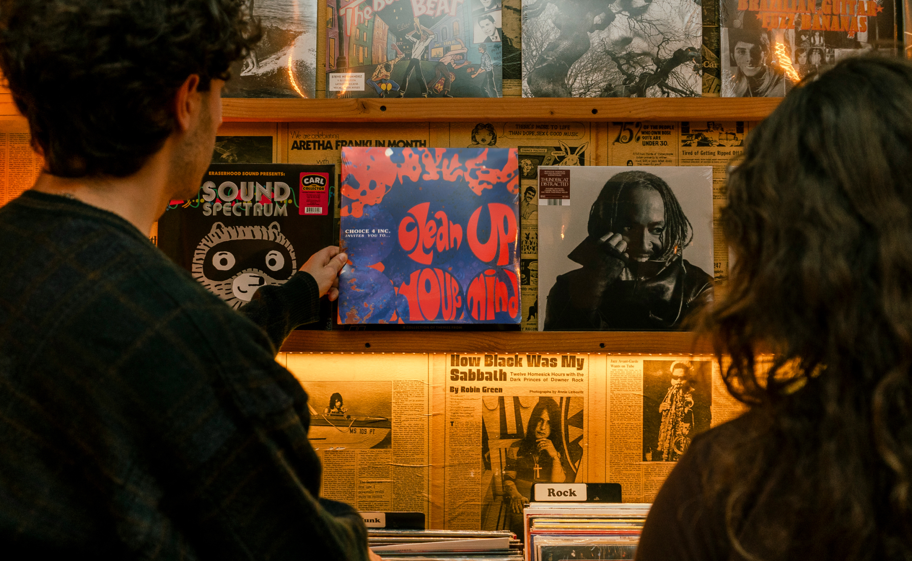
GROOVY
RICH
INTELLECTUAL
WARM
TRANSFORMATIVE
“Clean Up Your Mind” is a psychedelic funk album from Choice 4 Inc. that was recorded in 1972 at Philadelphia’s iconic Sigma Sound Studios. It was preserved within the Drexel Audio Archives and then released by Mad Dragon Records more than five decades after its inception.
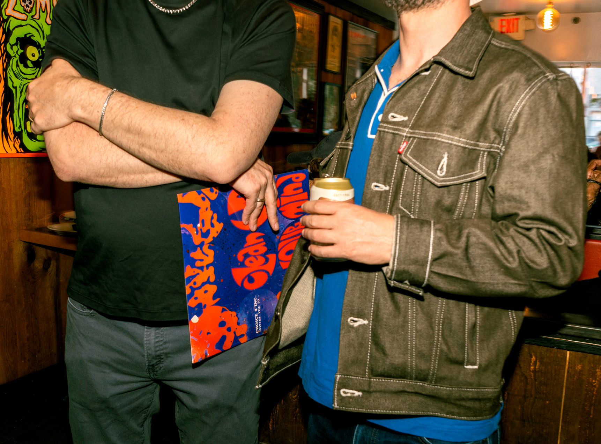
The album features eight never-before-heard tracks that play like a time capsule. We wanted to pay homage to design motifs of the 70s while celebrating the opportunity to share the release with a modern audience.
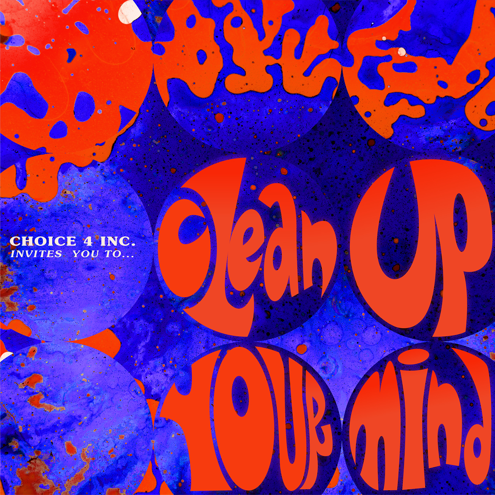
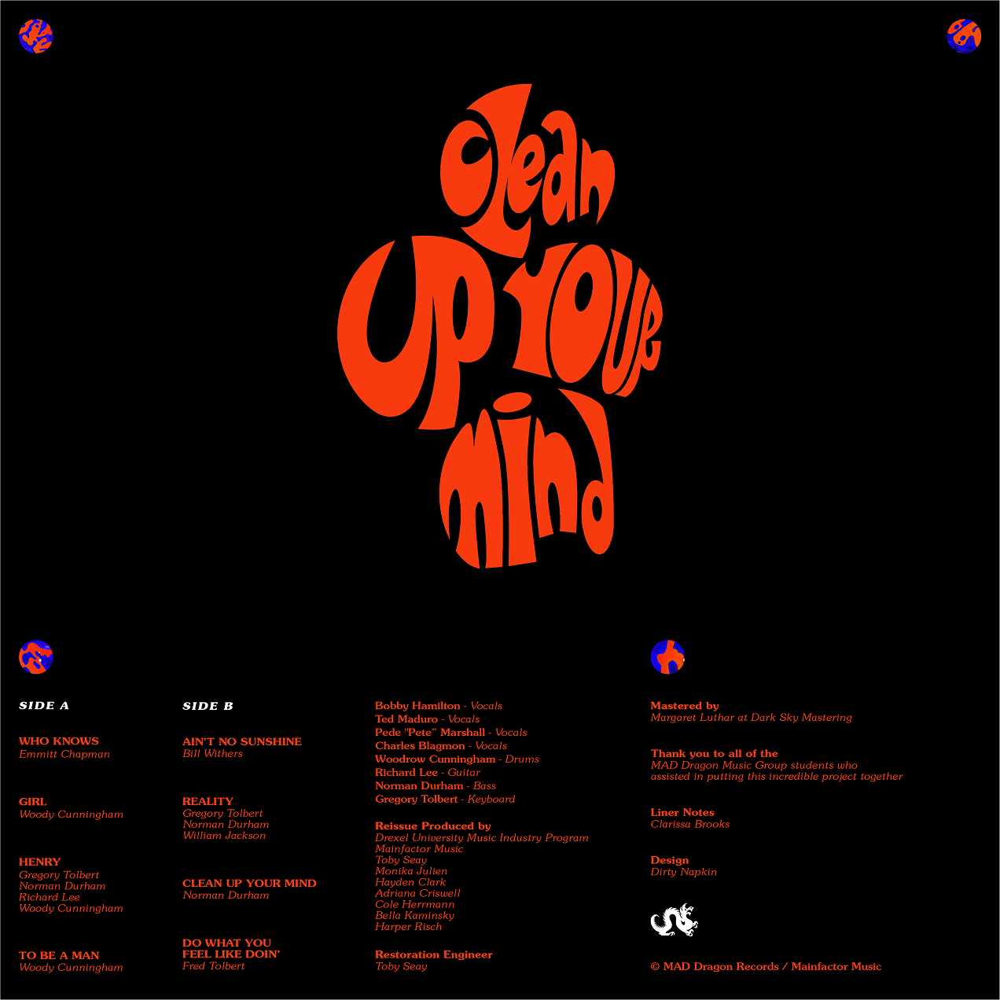
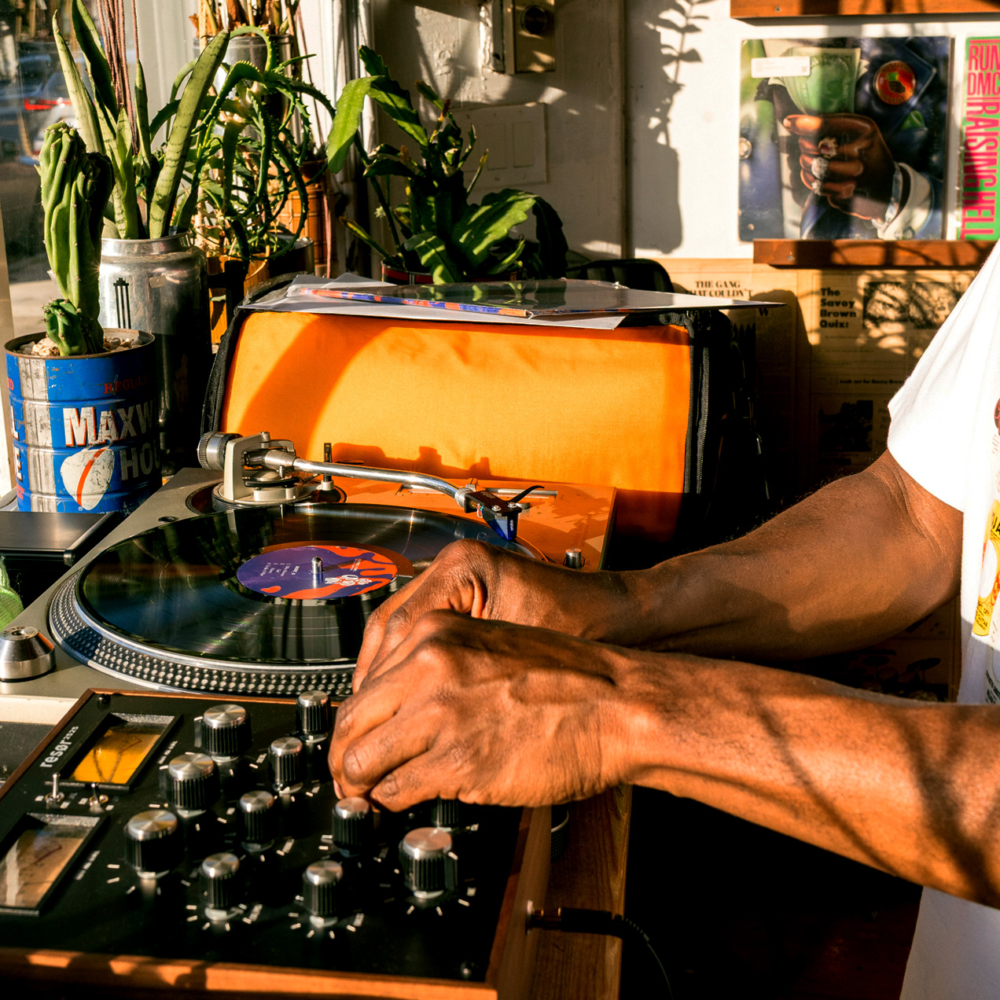
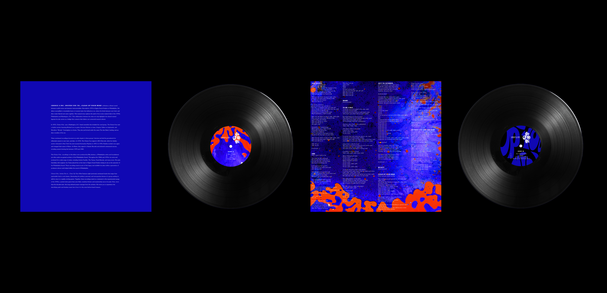
“Clean Up Your Mind” documents an early intersection of soul, funk, and psychedelia, laying groundwork for an influential fusion of genres and standing as a testament to the experimental energy of the 1970s.
We brought this electric spirit to the modern day by utilizing liquid light shows, an art form known for being live projected during psychedelic concerts in the 70s. We created our own liquid light compositions and paired them with hand-drawn typography that mimics the organic forms.
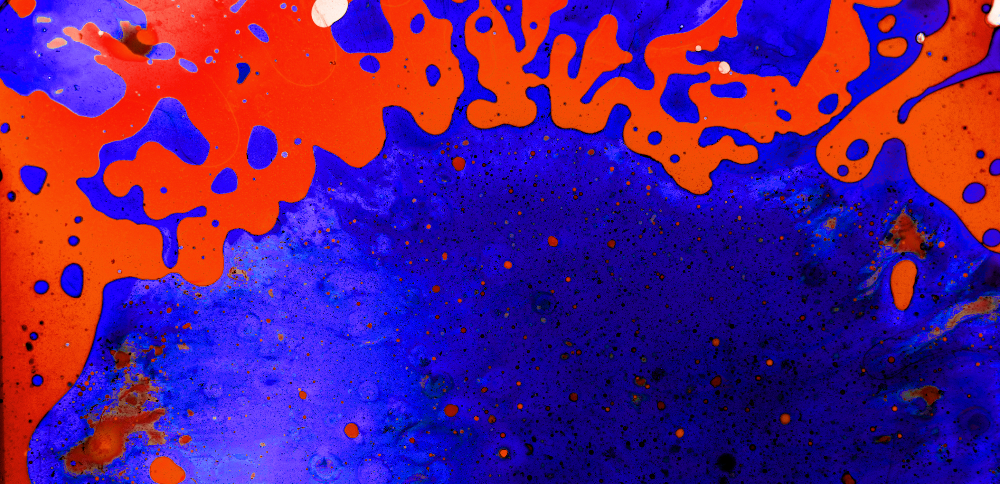
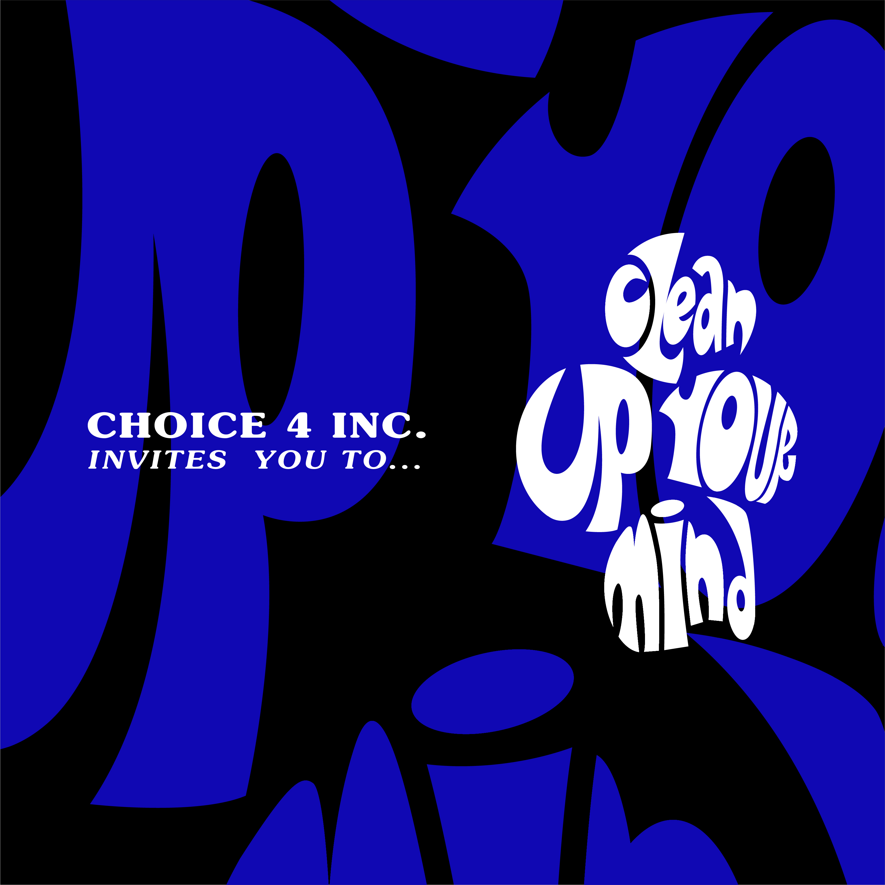
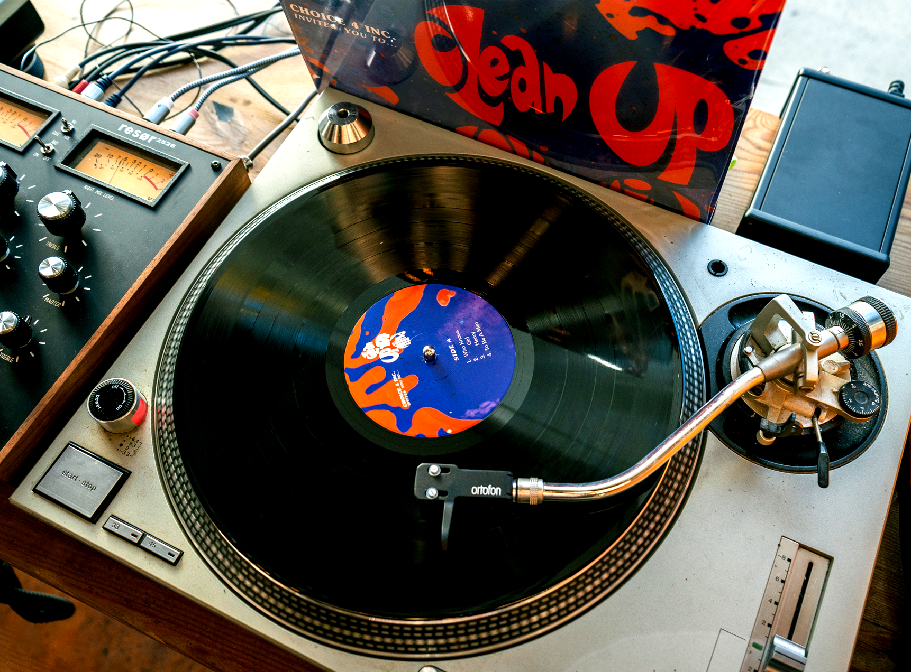
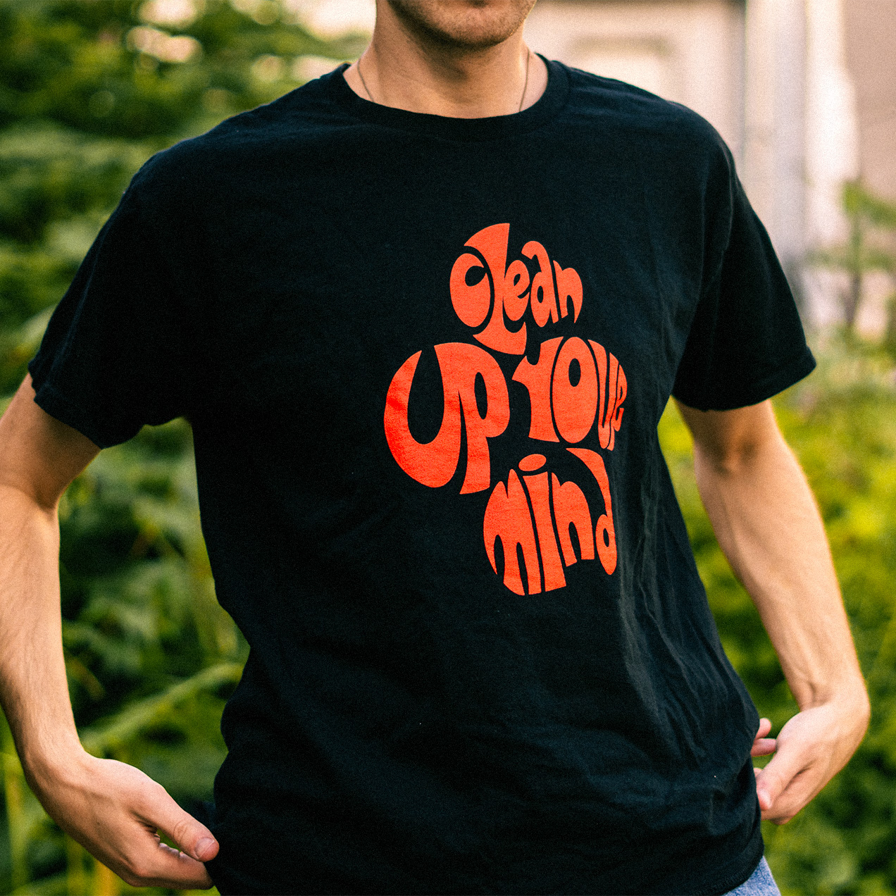
The album release party gathered Philly music lovers of all generations. You can see the vinyl and learn more about the project’s journey in the PHL17 News segment here.
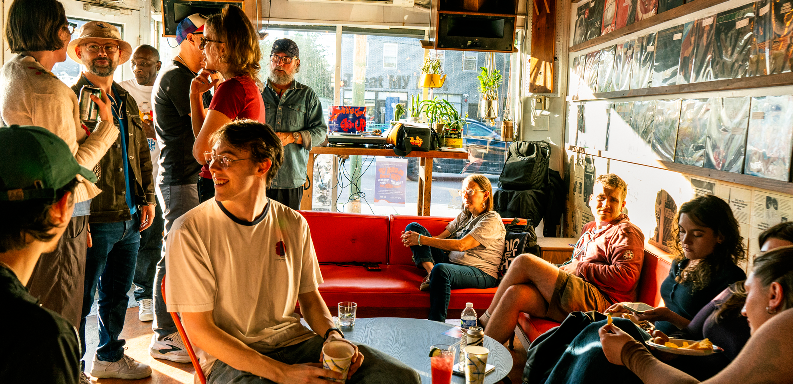